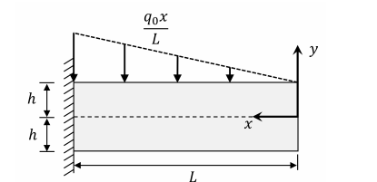

Elasticity Analysis of a Cantilever Beam Under Varying Pressure
Problem Statement
A cantilever beam of length \( L \), depth \( 2h \), and thickness \( t \) is in a state of plane stress.
On its upper surface, it is subjected to a pressure that varies linearly from a value \( q_0 \) (per unit area) at the fixed end, to zero at the free end, as shown in Figure 1.
It is also given that \( h \) is very small relative to \( L \).

Figure 1: Cantilever Beam under Linearly Varying Pressure
Questions
-
When applying the Theory of Elasticity, state the five material assumptions. Identify any violated assumptions if the beam is made of steel-reinforced concrete.
[3 marks]
-
List eight conditions that an Airy stress function \( \phi(x, y) \) and boundary conditions must satisfy for this loading case.
[8 marks]
-
Show that the function
\[
\phi(x, y) = A(3hxy + 10x^3) + B(3xy^5 - 5x^3 y^3 - 6h^2 xy^3 + 15h^2 x^3 y)
\]
satisfies the eight conditions. Express \( A \) and \( B \) in terms of \( q_0, L, h \).
[7 marks]
-
Describe how to calculate the strain and displacement fields based on the stress function.
[2 marks]
Solution Process
1. Material Assumptions
The five assumptions in linear elasticity are:
- Continuity
- Homogeneity
- Isotropy
- Elasticity
- Linearity
For steel-reinforced concrete, the violated assumptions are:
- Homogeneity: Different materials (steel, concrete) → non-uniform properties
- Isotropy: Reinforcement introduces directional properties
- Continuity: Concrete may contain pores or voids
2. Boundary Conditions and Governing Equations
The Airy stress function must satisfy the following:
- \( \sigma_x(0, y) = 0 \)
- \( \tau_{xy}(x, +h) = 0 \)
- \( \tau_{xy}(x, -h) = 0 \)
- \( \sigma_y(x, +h) = -q_0 \frac{x}{L} \)
- \( \sigma_y(x, -h) = 0 \)
- \( \int_{-h}^{+h} \sigma_x(0, y) t \, dy = 0 \)
- \( \int_{-h}^{+h} \tau_{xy}(0, y) t y \, dy = 0 \)
- Biharmonic equation: \( \nabla^4 \phi = 0 \)
3. Verifying the Stress Function
Given:
\[
\phi(x, y) = A(3hxy + 10x^3) + B(3xy^5 - 5x^3 y^3 - 6h^2 xy^3 + 15h^2 x^3 y)
\]
The stress components are:
\[
\sigma_x = \frac{\partial^2 \phi}{\partial y^2} = B(60xy^3 - 30x^3 y - 36h^2 xy)
\]
\[
\sigma_y = \frac{\partial^2 \phi}{\partial x^2} = 60Ax + B(-30x y^3 + 90h^2 xy)
\]
\[
\tau_{xy} = -\frac{\partial^2 \phi}{\partial x \partial y} = -3Ah - B(15y^4 - 45x^2 y^2 - 18h^2 y^2 + 45h^2 x^2)
\]
From boundary condition substitution and simplification:
- For boundary conditions 1–5 to be satisfied, we must have \( A = B h^3 \)
- Matching loading at the top surface gives:
\[
B = -\frac{q_0}{120 L h^3}, \quad A = -\frac{q_0}{120 L}
\]
Also, the biharmonic equation:
\[
\nabla^4 \phi = \frac{\partial^4 \phi}{\partial x^4} + 2 \frac{\partial^4 \phi}{\partial x^2 \partial y^2} + \frac{\partial^4 \phi}{\partial y^4} = 0
\]
is satisfied.
4. Strain and Displacement Field (Procedure)
To determine strain and displacement fields:
- Use Hooke’s law:
\[
\epsilon_x = \frac{\sigma_x}{E}, \quad \epsilon_y = \frac{\sigma_y}{E}, \quad \gamma_{xy} = \frac{\tau_{xy}}{G}
\]
- Relate to displacements:
\[
\epsilon_x = \frac{\partial u}{\partial x}, \quad \epsilon_y = \frac{\partial v}{\partial y}, \quad \gamma_{xy} = \frac{\partial u}{\partial y} + \frac{\partial v}{\partial x}
\]
- Integrate to obtain \( u(x, y) \) and \( v(x, y) \), applying appropriate boundary conditions.